o0series
Overview
o0series is an interdisciplinary art project bringing together Ukrainian visual artists and electronic musicians to create a series of hand-painted Dino sculptures accompanied by live audiovisual performances.
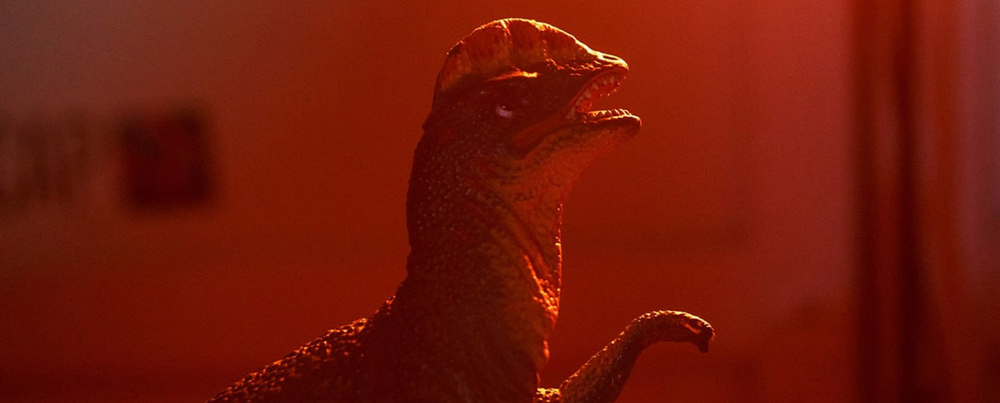
The project began spontaneously from a request to design a website. This initial task became my entry point into creative coding and web-based experimentation, later expanding into a holistic visual and conceptual system.
I acted as a creative partner, responsible for identity, logo development, symbolic research, website vibe-coding from scratch, 3D integration, motion design, social media visuals, and the conceptual framing of Dino as the project’s central figure.
Dino & Symbolism
Dino is the mascot and talisman of 20ft Radio. Prior to any visual or logo development, I conducted an in-depth symbolic discovery focused on reptilian imagery, cyclical rhythms, and loop-based musical structures.
The dinosaur emerged as a metaphor for an ancient instinctive force, comparable to the ouroboros cycle — repetition embedded in sound, bodily response, and visual rhythm. From this research, Dino was positioned as a portal to childhood: a state of play, curiosity, and intuitive creativity.
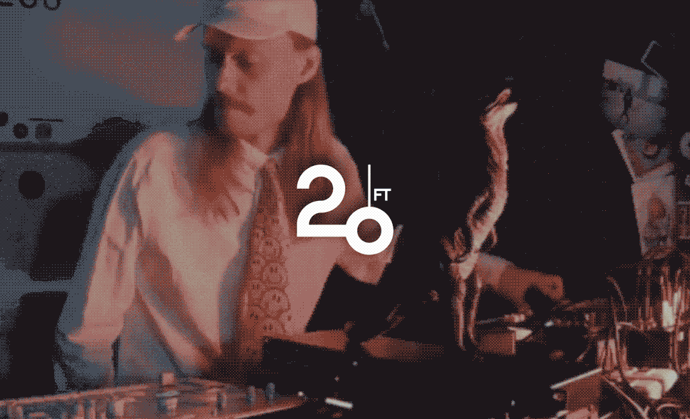
This myth-narrative became the foundation of the project. Only after it was defined did the logo development begin. Over time, the concept was intentionally simplified, allowing Dino to function as an approachable, intuitive figure. In o0series, it becomes a canvas — reinterpreted visually by artists and expanded sonically by musicians into complete audiovisual identities.
Logo Development
The o0series logo was designed as a flexible, modular symbol rather than a static mark. Visually, it depicts two dinosaurs facing each other — simultaneously referencing yin and yang, the letters “OO”, and the ouroboros: a serpent consuming itself.
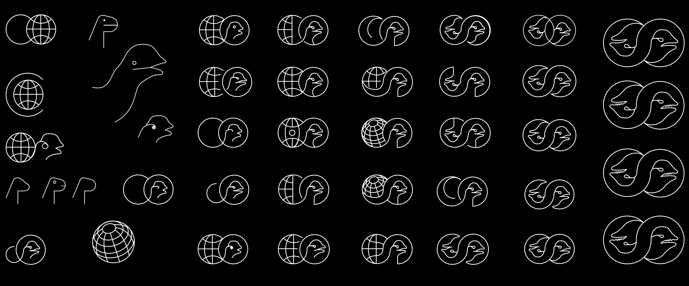
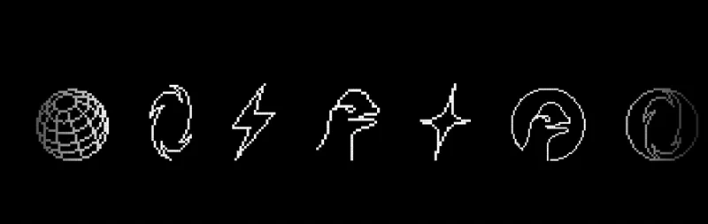
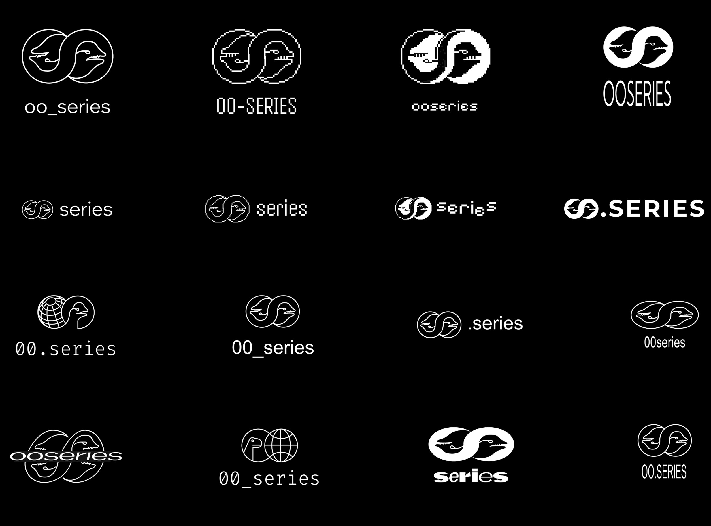
The mark reflects repetition, balance, and transformation while remaining neutral enough to coexist with highly expressive artworks and diverse musical aesthetics.
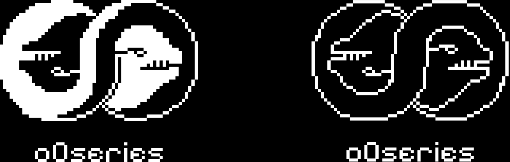
Website & content
The o0series website was vibe-coded entirely from scratch and became the conceptual core of the project. It functions not as a promotional platform, but as an experiential digital space.
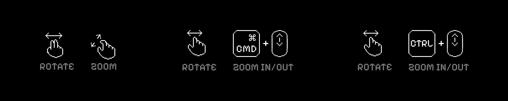
The site integrates real-time 3D elements and GSAP-based text animations, including animated narrative fragments about Dino. Interface icons adapt dynamically depending on the operating system (iOS, Windows) and screen context.
Fully responsive across all devices, the website acts as a living archive — hosting documentation, interviews, videos, and process materials. Rather than explaining the project directly, it invites the viewer to explore and feel it through motion, rhythm, and visual tension.
Posters
Posters were designed for both Instagram and external physical advertising. Each event received a unique visual cover resonating with the specific style of the painted Dino.
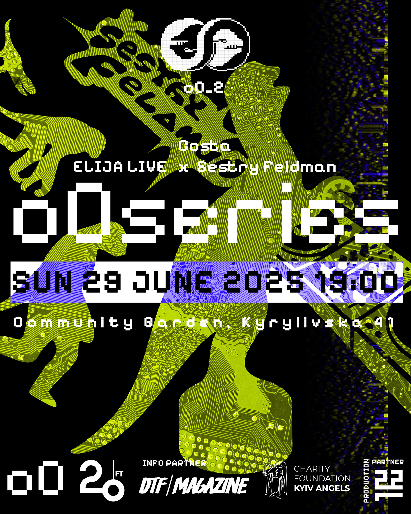
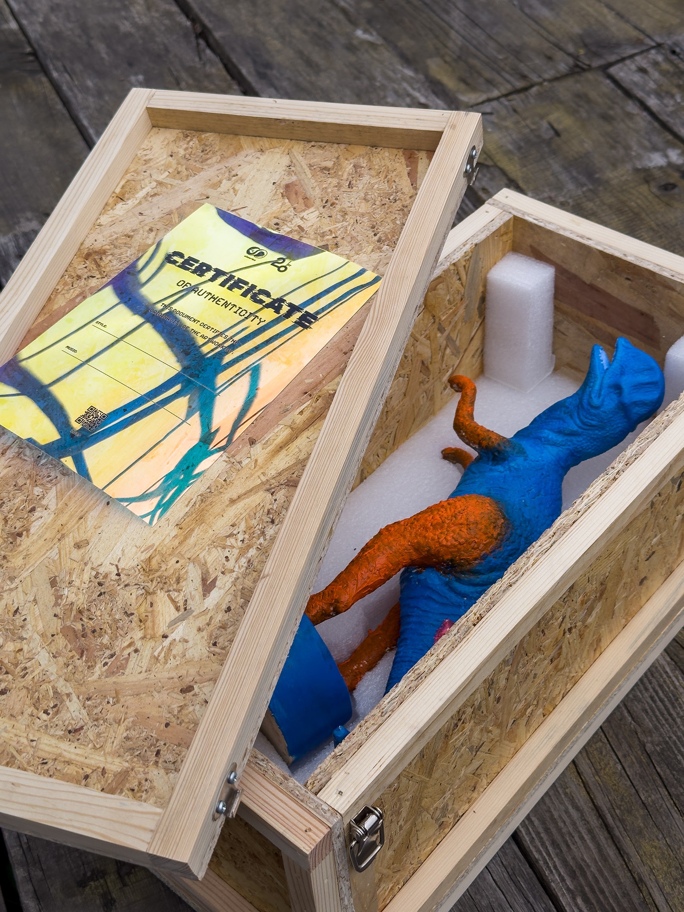
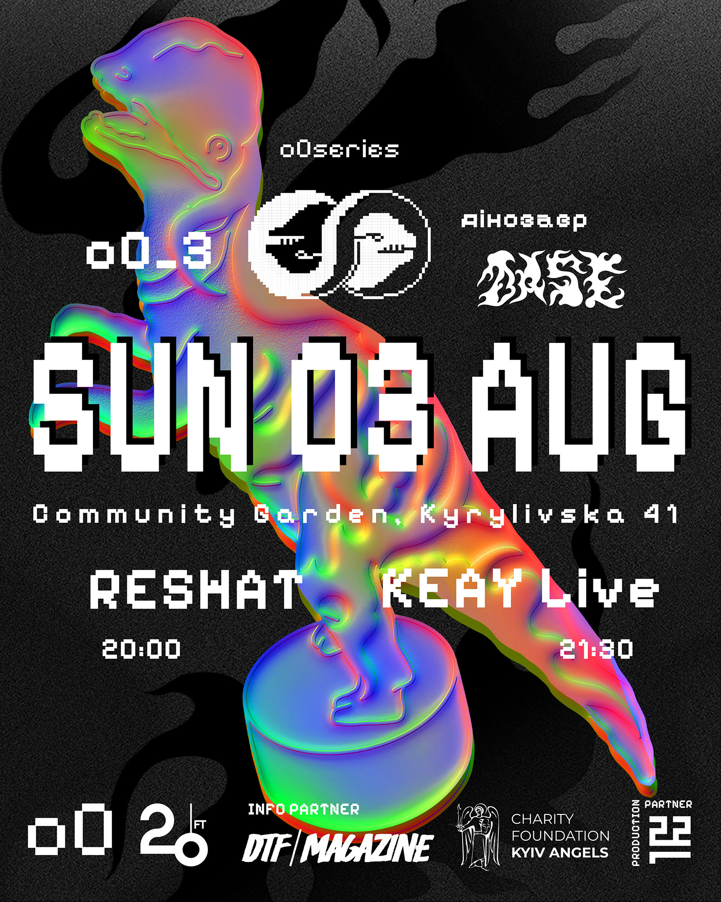
Collaboration with 22f
The project was developed in collaboration with 22f. Its founder, Bohdan, contributed materials and ideas for the boxes and certificates.
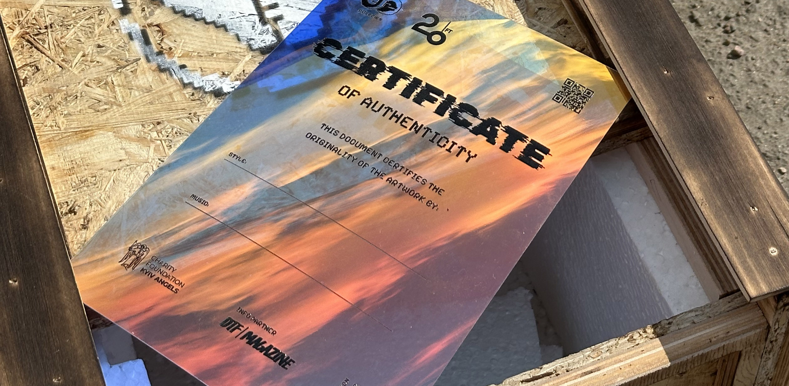
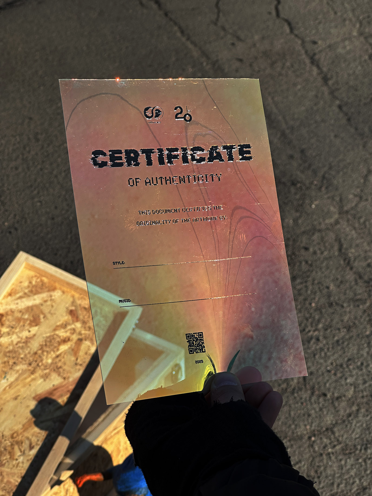
My concept was to print certificates on transparent, iridescent plastic using the DTF method. For the boxes, I designed, cut, and applied stencils manually using spray paint.
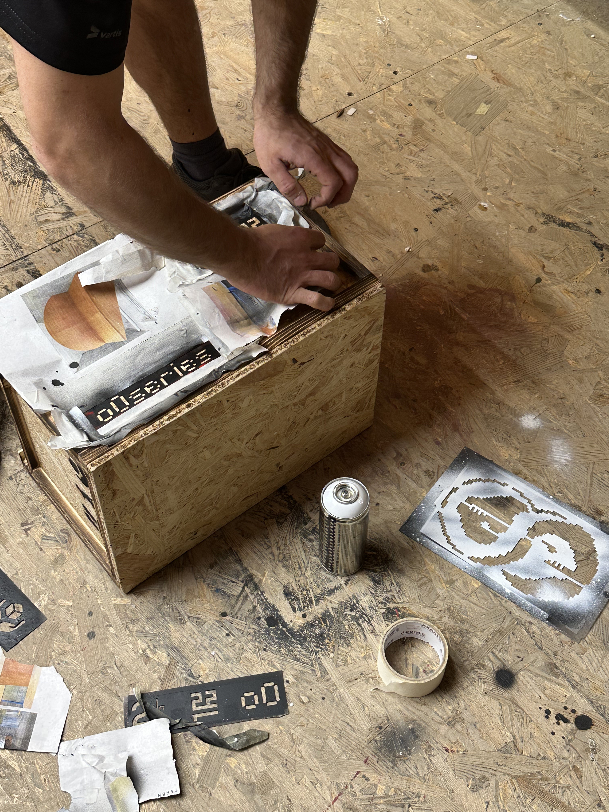
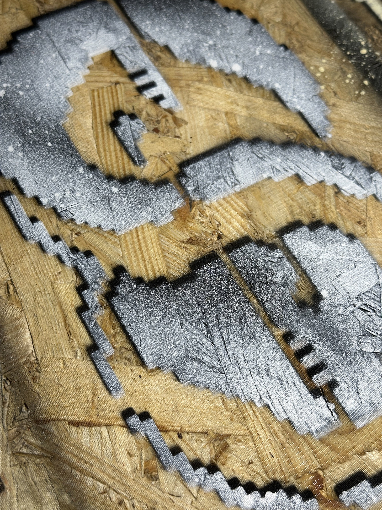
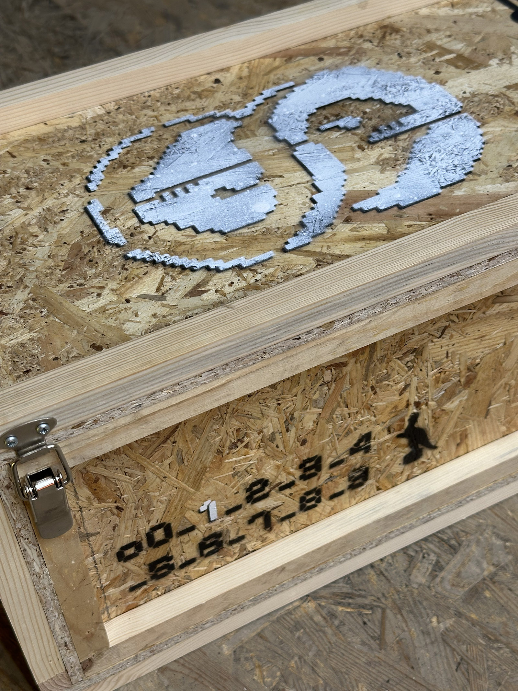
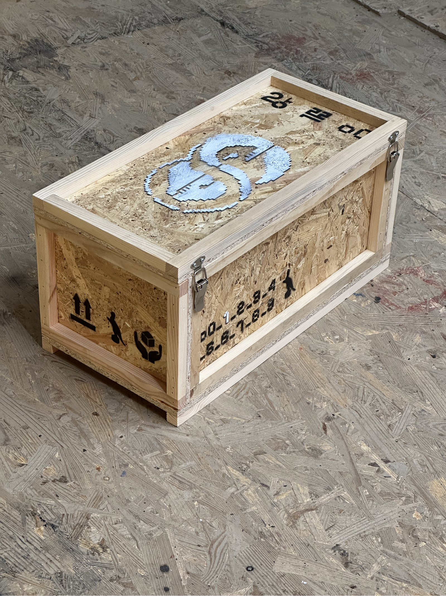
An info-cube was created as an art object for event entrances. Built from wood and the same plastic used for certificates, it functioned as a physical donation box for cash contributions.
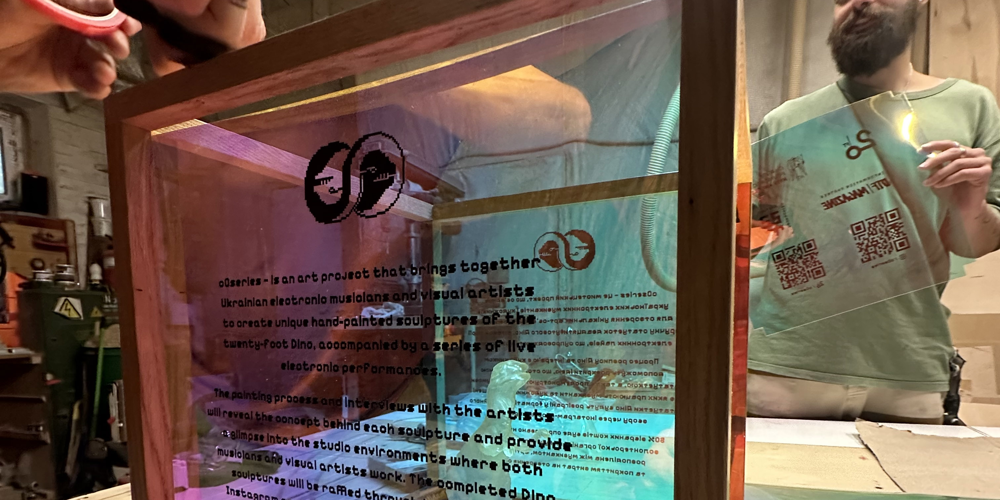
Events, Artists & Musicians
The project operates under wartime conditions in Ukraine. Events take place in an intimate community garden atmosphere, emphasizing safety, closeness, and collective presence.
The project pairs visual artists and electronic musicians based on shared sensibility and aesthetic language. Continuation of the series is planned for summer 2026.